基础无副翼直升机示例¶
一个基础的无副翼(FBL)直升机设置示例,这里以 Spirit 之类的控制器为例。与固定翼模型不同,直升机本身是不稳定的——FBL 控制器利用陀螺仪(旋转角速度)和加速度计(运动/姿态)通过调校好的 PID(比例-积分-微分)控制环路计算偏航/俯仰/横滚修正量,并根据具体直升机的机械与电气特性在稳定性、响应性和过冲之间取得平衡。
本教程仅涉及遥控器编程部分——其余内容请参阅您的 FBL 单元自带的说明文档,并且在开始之前您应已具备扎实的直升机通用知识。
Danger
为确保安全,开始之前请先拆下主旋翼桨叶。
步骤 1. 确认系统设置¶
通道顺序为 AETR,前四通道固定 设为 OFF——Spirit FBL 单元要求 SBUS 通道严格按此顺序排列(尽管其自身配置软件内部使用 TAER 顺序)。通过 RF System 注册(若为 ACCESS)并对频接收机。
步骤 2. 确定所需的舵机/通道¶
| 功能 | 通道 |
|---|---|
| 横滚(副翼) | — |
| 俯仰(升降舵) | — |
| 油门 | — |
| 偏航(方向舵) | — |
| 陀螺仪增益 | 5 |
| 总距 | 6 |
| 设置组(Bank) | 7 |
| 救援(Rescue) | 8 |
步骤 3. 新建模型¶
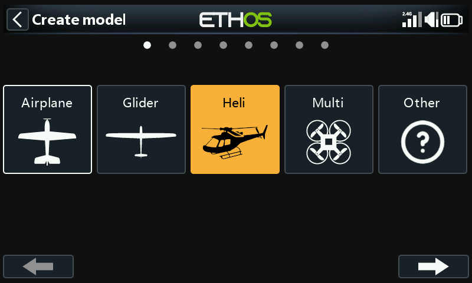
在 模型选择 中创建/选择一个直升机(Heli)分类,启动向导,并选择 Flybarless:
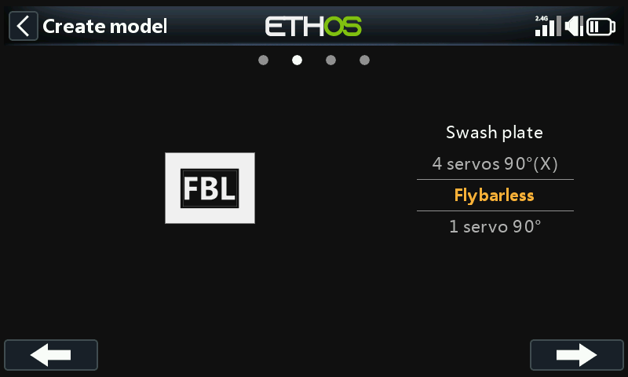

为模型命名并选择一张图片。
步骤 4. 检查并配置混控¶
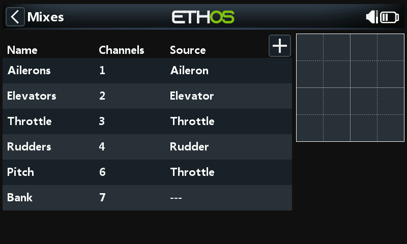
向导会按 AETR 顺序建立副翼/升降舵/油门/方向舵,总距(Pitch)位于通道 6,FBL Bank 位于通道 7:
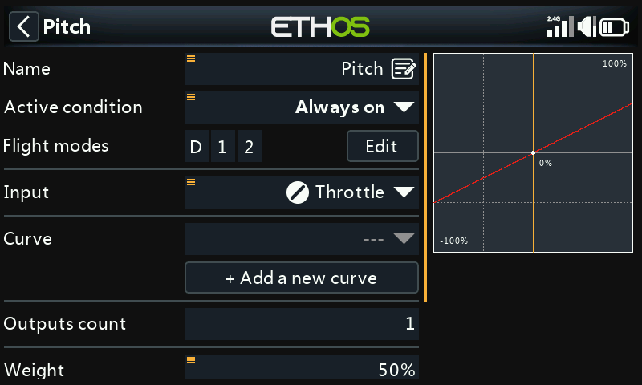
确认通道 6 为总距(Collective Pitch)。另有两个通道需要手动添加 自由混控:陀螺仪增益(通道 5)和 Rescue/Stabi(通道 8)。
副翼/升降舵/方向舵——无需添加任何内容;行程比率与 Expo 由 FBL 单元负责,遥控器只需传递干净的线性输入。
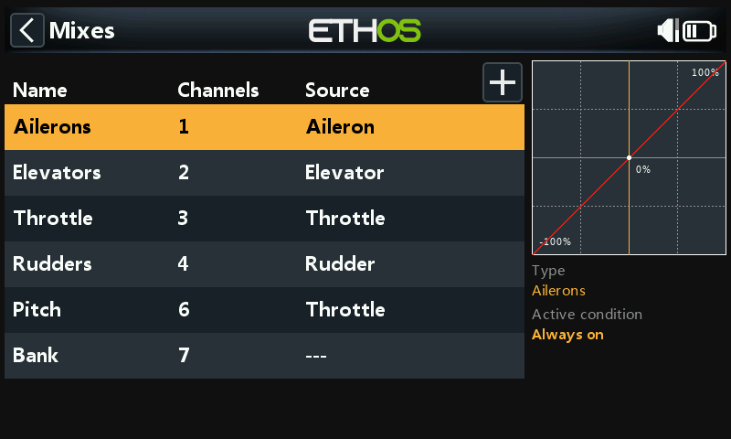
总距——采用一条直线线性曲线;只需确认输出通道(通常为 6)。同上,行程比率/Expo 由 FBL 单元处理,而不是在这里设置。
FBL Bank——Spirit 的三个设置组(不同的飞行风格、不同转速下的传感器增益,或者初学者/特技/3D——也可以只是调参预设)映射到一个三段开关,例如 SE:
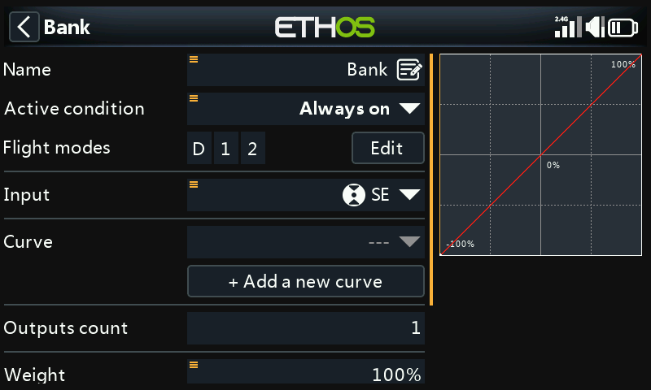
陀螺仪增益——在最后一个通道之后添加为自由混控。增益通常是一个固定值:将信号源设为 Special Value 0,通过 Offset 设定增益值(之后在飞行中微调),输出到通道 5:

配置飞行模式¶

三个 飞行模式:将默认模式重命名为 Normal,并在开关 SD 上添加 Idle Up 1/Idle Up 2。
配置油门混控¶
三条油门曲线,每个飞行模式一条,每条都是 自定义曲线:
- Normal——升转速/起飞用:起点为 −100%(电机关闭),然后平滑上升。使用 7 点曲线并开启 Smooth 效果很好;具体数值需要在飞行中调校。

- Idle Up 1——常规飞行:采用直线曲线,提供恒定的油门设定以保持稳定的旋翼转速,机动动作则由总距、副翼(横滚)和升降舵(俯仰)来完成。要保证从 Normal 切换过来的过渡平滑——不能有大幅跳变。(多数 FBL 单元还提供 Governor(转速控制)功能,可在剧烈机动中保持旋翼转速恒定——参见 FBL 单元自带的说明书。)
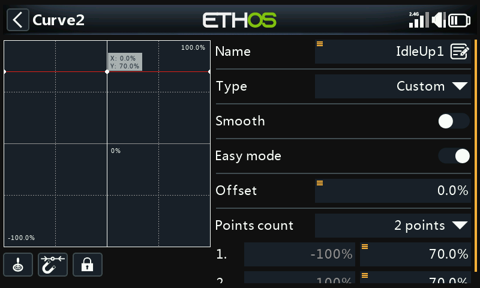
- Idle Up 2——激烈飞行(特技、3D);同样需要在飞行中调校。
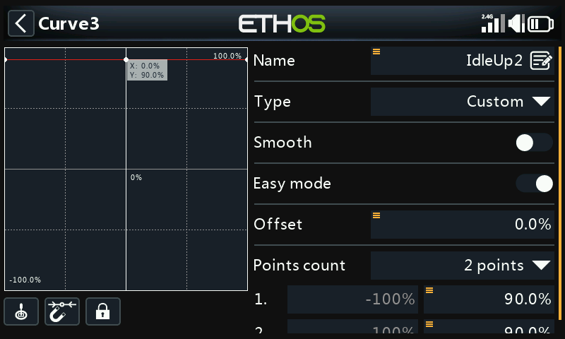
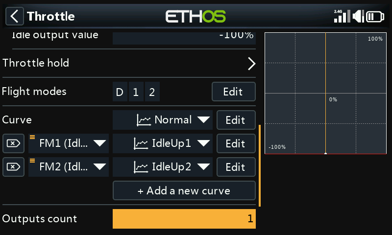
油门切断——例如指定开关 SG 上位并开启 Sticky:将 SG 拨到上位会立即切断油门,并且(由于 Sticky 的作用)只有在油门摇杆先回到低位/关闭位置后才能重新解除。
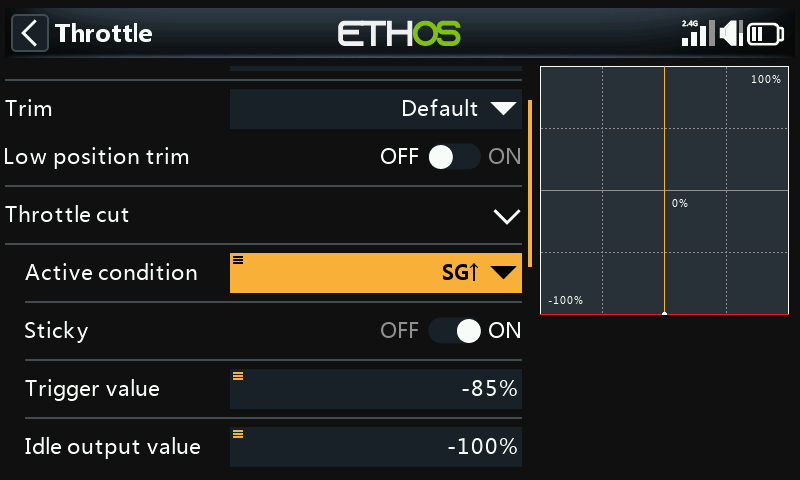
Rescue/Stabi——以类似方式指定,例如指定开关 SA,输出到通道 8。
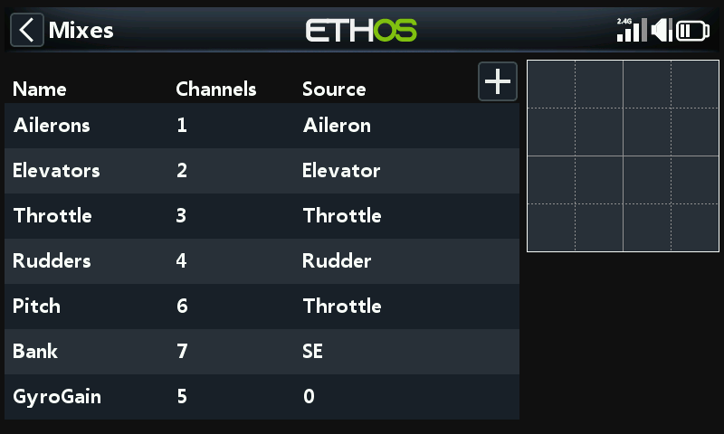
步骤 5. FBL 设置¶
- 安装 FBL 配置工具——例如在 PC 上安装 Spirit Settings。
- 按接线图将接收机连接到 FBL 单元——通常是接收机的 SBUS Out 接到 FBL 单元的 RUD 口(某些 Spirit 型号需要 SBUS 转接器),或改用 F.Port1/FBUS 连接。
- 将 FBL 单元连接到 PC——按其说明书使用数据线或 Bluetooth。
!!! danger 此时请勿连接任何舵机。
- 如有需要,在配置工具的 Update 标签页中升级 FBL 固件。
- 常规设置(Spirit Settings 的 General 标签页):
- 接收机类型:根据实际情况选择 Futaba SBUS 或 FrSky F.Port,然后重启。
-
通道映射(向导生成的 AETR 顺序):
功能 通道 油门 1 副翼 2 升降舵 3 方向舵 4 陀螺仪 5 总距 6 Bank 7 Rescue/Stabi 8 (此映射关系源自 Spirit 单元对 SBUS 数据流中各通道位置的解读方式。)
-
通道行程限制(Diagnostic 标签页)——FBL 单元需要经过校准的遥控器通道行程限制以及已确认的中立点:
-
先将遥控器上所有的 subtrim 和微调全部归零。
- 将总距摇杆置于中位,使 输出 中读数正好为 1500µs。
- 给 FBL 单元通电,确认 Diagnostic 标签页中副翼/升降舵/总距/方向舵读数均为 0%(FBL 单元在每次初始化时自动检测中立点)。
- 将每个控制打到极限位置,并调整输出中对应的 Min/Max,直到 Diagnostic 标签页读数正好为 +100%/−100%,同时确认条形图的方向与摇杆方向一致。
!!! warning 切勿在这些通道上使用 subtrim 或微调——Spirit FBL 单元会将其视为输入指令,而非校准值。
- 调整陀螺仪增益混控的 Offset,以实现航向锁定(Heading Lock)。
完成以上步骤后,发射机端已完全配置好——请按 FBL 单元自带的说明书继续完成其余设置。